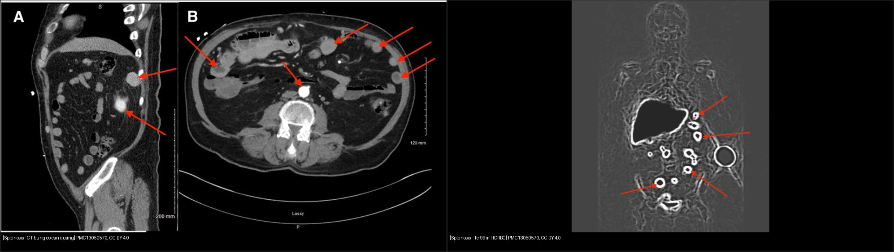
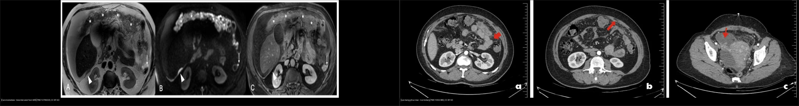
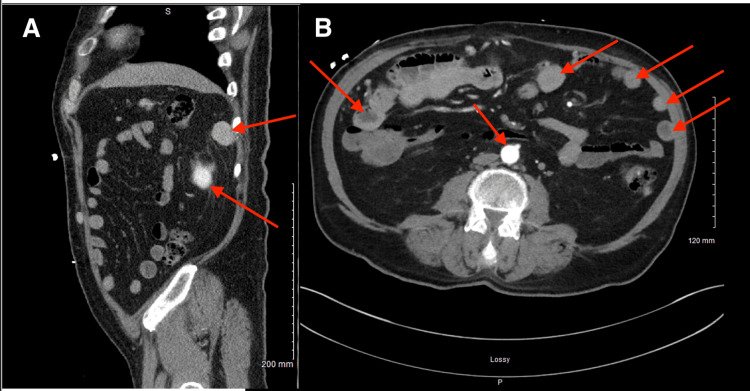
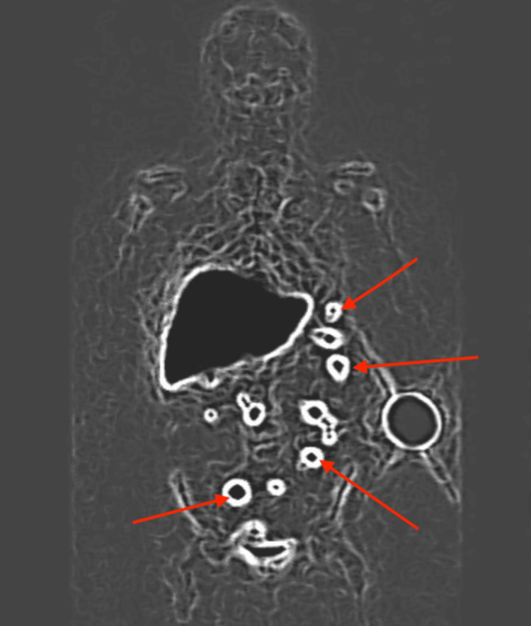
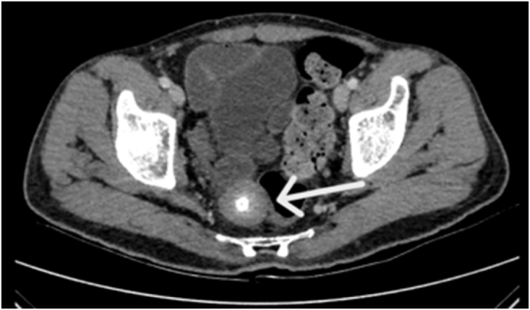
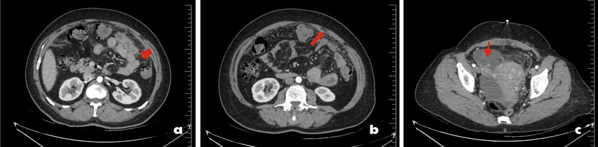
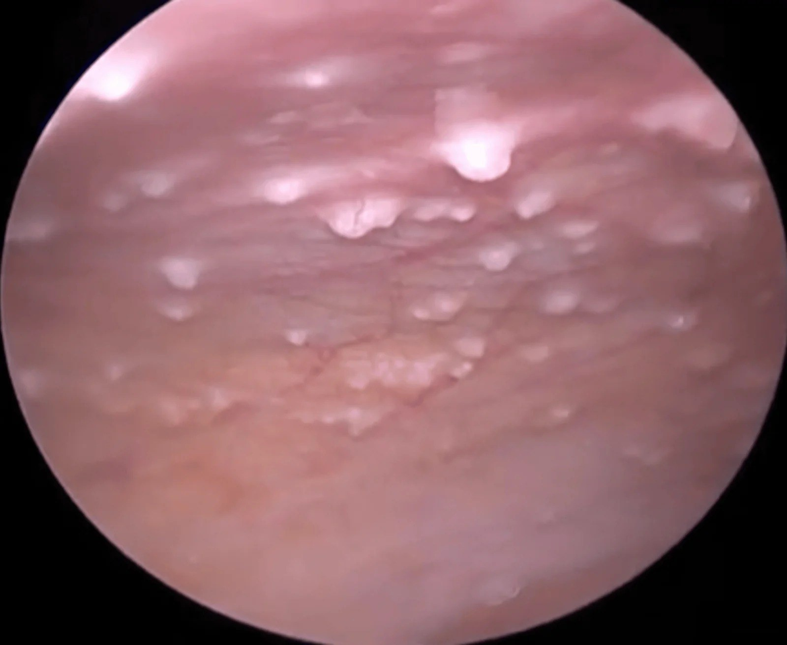
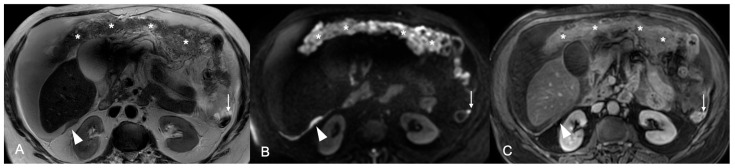
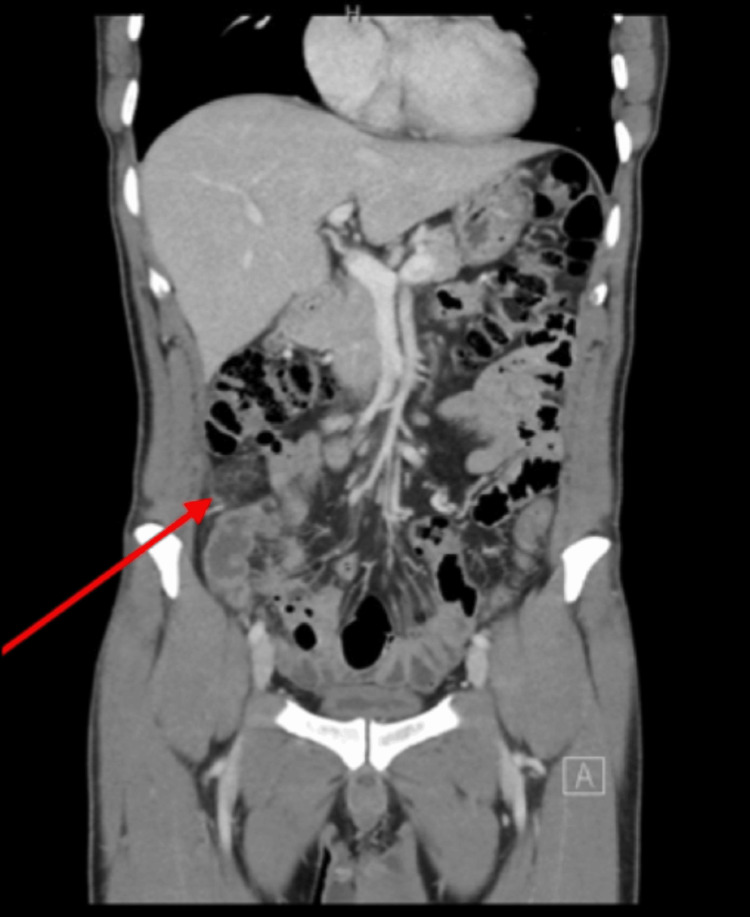
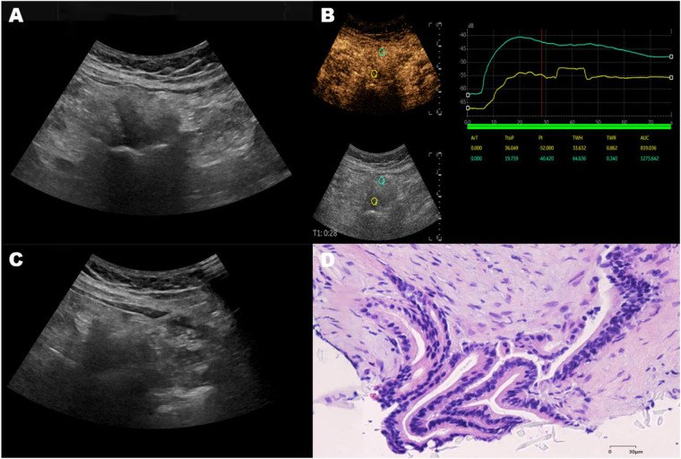

549 — Nốt đặc phúc mạc không xác định: gieo rắc LÀNH vs ÁC & ngưỡng sinh thiết
Tags: pattern:not-phuc-mac pattern:di-can-phuc-mac vung:phuc-mac vung:mong score:PCI protocol:sinh-thiet-hinh-anh incidentaloma:not-phuc-mac
Mức chắc chắn (certainty): tổng hợp y văn (literature synthesis) — tổng hợp nhiều ca nguyên văn có mô bệnh + cohort có đối chiếu mô bệnh, chưa phải một ca đơn lẻ.
1. Tổng quan bệnh học – cơ chế hình ảnh
- Phúc mạc (peritoneum) gồm lá thành và lá tạng, liên tục qua mạc nối (omentum), mạc treo (mesentery) và túi cùng Douglas. Nốt đặc ở đây chỉ là hình thái, không phải chẩn đoán: cùng một nốt 1 cm có thể là di căn phúc mạc, lao phúc mạc, splenosis, lạc nội mạc, u mô đệm cơ tử cung lan phúc mạc (LPD), hạch mạc treo, mảnh mỡ hoại tử (peritoneal loose body) hoặc nhồi máu mạc nối.
- Con đường lan: (1) xuyên khoang phúc mạc (transcoelomic) — tế bào u bong vào dịch, gieo theo dòng dịch và trọng lực → túi cùng, mạc nối, mặt hoành; (2) mạch máu — sarcoma, melanoma; (3) mạch bạch huyết — carcinoma buồng trứng/đại tràng; (4) cấy ghép sau mổ/chấn thương — splenosis, LPD sau morcellation. Vì vậy tiền sử mổ/chấn thương là dữ kiện ngang hàng với hình ảnh.
- TẠI SAO nhìn thấy trên CT: mô u thay mỡ mạc nối (mỡ −80 đến −120 HU) bằng mô mềm 30–50 HU, nên nốt nổi bật trên nền mỡ. Splenosis ngấm thuốc đồng nhất, tương đương nhu mô lách (khoảng 80–100 HU thì động mạch, 60–80 HU thì tĩnh mạch cửa) vì mô lách lạc chỗ có xoang mạch bình thường. Mảnh mỡ hoại tử có vôi hóa trung tâm/vỏ (> 100 HU) và di động theo tư thế; nhồi máu mạc nối là dải mỡ tăng đậm độ không tạo khối đặc thật.
- TẠI SAO nhìn thấy trên MRI: nốt tế bào giàu → hạn chế khuếch tán (DWI b800–1000 sáng, ADC thấp); tổ chức xơ → T2 tối; máu cũ/lạc nội mạc → T1 sáng không mất khi fat-sat; nhầy → T2 rất sáng. Đây là lý do không thể chốt lành/ác chỉ bằng kích thước.
- Ngưỡng định lượng dùng trong bài:
- Splenosis: nhiều nốt 0,8–2,5 cm, bờ rõ, ngấm đồng nhất; chẩn đoán xác nhận bằng Tc-99m HDRBC (hồng cầu bị gia nhiệt đánh dấu) — độ tập trung tương đương lách gốc.
- Peritoneal loose body: thường 0,5–2,5 cm, có thể 5–10 cm; vôi hóa trung tâm/đồng tâm kiểu “vỏ trứng”, di động.
- PCI (Peritoneal Cancer Index, Sugarbaker): 13 vùng, mỗi vùng 0–3 điểm → 0–39; trên MRI, PCI ≤ 20 dự báo cắt u tối ưu (AUC 0,94), PCI > 20 gợi ý không cắt triệt căn được (Konidari 2026, n = 46).
- CA-125 không phân biệt được lao và ung thư: ca lao phúc mạc có CA-125 758,3 U/mL; ADA dịch báng tăng (trung bình 45,8 U/L, ngưỡng thực hành thường 30–40 U/L).
- Sinh thiết lõi (core needle): kim 18G, lấy ≥ 2–3 mảnh, ưu tiên vùng ngấm thuốc/không hoại tử; với tổn thương mạc nối, CEUS giúp thấy kim và chọn vùng còn sống.
2. Mẫu hình + chẩn đoán phân biệt theo vị trí (gamut)
- Mạc nối (omental nodule / omental cake):
- Ác: di căn buồng trứng – đại tràng – tụy – dạ dày; “omental cake” (mạc nối dày, thâm nhiễm lan, mất cấu trúc mỡ); ung thư biểu mô phúc mạc nguyên phát; u trung biểu mô.
- Lành/giả u: splenosis, lao phúc mạc, LPD, nhồi máu mạc nối, peritoneal loose body, lạc nội mạc, hạch mạc treo.
- Mạc treo: hạch (target sign lành), xơ mạc treo (sclerosing mesenteritis) dạng khối mỡ bọc, desmoid, carcinoid (co kéo, canxi hóa), di căn.
- Túi cùng Douglas: di căn gieo (ung thư buồng trứng/dạ dày), lạc nội mạc, áp-xe, u quái, gliomatosis peritonei.
- Dưới hoành: splenosis (thường sau vỡ lách), di căn, hội chứng Fitz-Hugh–Curtis (dính bao gan do Chlamydia/Gonococcus).
- Mnemonic “SIMPLE”: Splenosis · Infection (lao, áp-xe) · Metastasis · Primary peritoneal (mesothelioma) · Lymphoma/LPD · Endometriosis/endosalpingiosis.
3. Bảng so sánh phân biệt (ma trận đối chiếu)
| Thực thể (entity) | Hình ảnh điển hình (CT/MRI) | Chốt vào (rule-in) | Chốt loại (rule-out) | Gợi ý xác nhận |
|---|---|---|---|---|
| Splenosis | Nhiều nốt 0,8–2,5 cm, bờ rõ, ngấm đồng nhất như lách; thường quanh mạc nối/đại tràng trái | Tiền sử vỡ lách/cắt lách + nốt ngấm giống lách | Tc-99m HDRBC âm (không có mô lách lạc) → loại splenosis | Tc-99m HDRBC khẳng định, không sinh thiết |
| Di căn phúc mạc / omental cake | Mạc nối dày lan, nốt bờ không đều, ngấm thuốc + hạn chế khuếch tán; kèm báng, hạch, u nguyên phát | Nốt ngấm + DWI sáng + u/báng nguyên phát | Nốt không ngấm, không hạn chế khuếch tán, canxi hóa đồng tâm → nghĩ lành | Sinh thiết lõi + IHC (PAX8, WT1, CK7/20, CDX2, SATB2) |
| Lao phúc mạc | Nốt miliary đều, dày phúc mạc, báng, hạch hoại tử; CA-125 cao | Báng lympho ưu thế + ADA tăng + IGRA dương | Nốt > 2 cm không đều + u buồng trứng → nghi ác hơn | Soi ổ bụng + sinh thiết mô bệnh (u hạt, tế bào Langhans), PCR/IGRA |
| Peritoneal loose body | Khối vôi hóa trung tâm/“vỏ trứng”, bờ rõ, di động, không ngấm | Vôi hóa đồng tâm + di động theo tư thế | Ngấm thuốc + dính cố định → không phải mảnh mỡ rời | So sánh 2 tư thế; cắt bỏ qua nội soi nếu có triệu chứng |
| Nhồi máu mạc nối | Dải mỡ tăng đậm độ khu trú, thường hố chậu phải, không tạo khối đặc | Đau khu trú + dải mỡ, không sốt cao | Khối đặc ngấm thuốc + hạch → loại nhồi máu | Theo dõi lâm sàng/CT 1–2 tuần; tránh mổ |
| LPD (leiomyomatosis peritonealis disseminata) | Nhiều nốt tròn, cùng tín hiệu/ngấm như u xơ, báng ít; tiền sử morcellation | Nốt giống u xơ + báng ít + tiền sử mổ u xơ | Báng lớn + bánh mạc nối + “khía” gan lách → carcinomatosis | MRI; sinh thiết nếu không điển hình |
| Lạc nội mạc phúc mạc | Nốt nhỏ, T1 sáng không mất khi fat-sat, T2 shading, dính | T1 sáng + đau chu kỳ | T1 không sáng sau fat-sat → loại máu cũ | MRI; đáp ứng hormone |

Trái: nhiều nốt mô mềm ngấm thuốc trong ổ bụng, khó phân biệt với di căn. Phải: Tc-99m HDRBC cho thấy hoạt độ trong các nốt tương đương lách — chốt splenosis, tránh sinh thiết. Nguồn: Memari K et al., Cureus 2026, PMC13050570, CC BY 4.0. Ảnh ghép letterbox.
Trái: MRI T2 — mạc nối thay mỡ bằng “bánh” mô mềm (dấu sao), nốt nhỏ ở rãnh cạnh đại tràng. Phải: CT — báng + nốt miliary + dày phúc mạc, sau đó mô bệnh là lao. Nguồn: Konidari M et al., Cancers 2026, PMC12785020 (CC BY 4.0); Ceyhan ME et al., Cureus 2026, PMC13502480 (CC BY 4.0).4. Protocol chụp + hệ phân độ & chiến lược sinh thiết
- CT bụng–chậu có cản quang (portal venous phase), lát ≤ 1 mm: đánh giá mạc nối, mạc treo, túi cùng, báng, hạch; ghi vị trí, số nốt, kích thước lớn nhất (mm), có canxi hóa/mỡ/ngấm thuốc.
- MRI bụng–chậu khi nốt nhỏ hoặc CT không kết luận: T2 fat-sat, DWI b800–1000 + ADC, T1 in/out-phase, T1 fat-sat trước/sau tiêm. Chỉ số cần ghi: ADC (×10⁻³ mm²/s), mức ngấm, có/không có thành phần mỡ–máu–nhầy.
- PET/CT khi chưa rõ u nguyên phát: hữu ích định vị ổ ác, nhưng lao/viêm cũng FDG dương → không chốt ác tính một mình.
- PCI trên CT/MRI (13 vùng, 0–39) khi nghi carcinomatosis: PCI ≤ 20 ủng hộ cắt u tối ưu; > 20 cân nhắc hóa trị tân bổ trợ thay vì mổ ngay.
- Chiến lược sinh thiết (khi hình ảnh không chốt được):
- Chọn nốt dễ tiếp cận và an toàn nhất, không nhất thiết là u nguyên phát (ví dụ nốt mạc nối thay cho u tụy sát động mạch lách).
- US/CEUS dẫn đường cho nốt nông, có cửa sổ; CT dẫn đường cho nốt sâu sau phúc mạc; sinh thiết qua túi cùng/âm đạo cho nốt Douglas.
- Kim 18G core, ≥ 2–3 mảnh, tránh vùng hoại tử; gửi IHC + sinh học phân tử (CLDN18.2, HER2, MSI...) nếu nghi ung thư.
- Không sinh thiết mù khi nghi splenosis, pseudomyxoma, nang sán hoặc tổn thương mạch máu.
flowchart TD
A[Nốt đặc phúc mạc/mạc nối] --> B{Có tiền sử vỡ/cắt lách?}
B -->|Có| C[Tc-99m HDRBC]
C -->|Dương| D[Splenosis - không sinh thiết]
C -->|Âm| E[Tiếp tục đánh giá]
B -->|Không| E
E --> F{CT/MRI có dấu hiệu ác: ngấm, DWI sáng, omental cake, báng?}
F -->|Có| G[Tìm u nguyên phát + PET/CT + PCI]
G --> H{Có chỉ định mô học / PCI ≤ 20?}
H -->|Có| I[Sinh thiết lõi 18G dưới US/CT/CEUS]
H -->|Không| J[Hóa trị tân bổ trợ / MDT]
F -->|Không| K{Nốt vôi hóa đồng tâm, di động?}
K -->|Có| L[Peritoneal loose body - theo dõi/cắt nội soi]
K -->|Không| M{Xét nghiệm lao: ADA, IGRA, PCR?}
M -->|Dương| N[Lao phúc mạc - điều trị lao]
M -->|Âm| I
5. Biến thể bình thường và cạm bẫy
- Splenosis là cạm bẫy lớn nhất: nốt 0,8–2,5 cm, ngấm mạnh, xuất hiện nhiều năm sau chấn thương — sinh thiết có thể chảy máu và hoàn toàn không cần thiết. Luôn hỏi tiền sử cắt lách/vỡ lách; xác nhận bằng Tc-99m HDRBC.
- Peritoneal loose body (“peritoneal mouse”): khối vôi hóa trung tâm, di động, có thể 4 × 3 cm và chèn ép trực tràng; đừng gọi là “u mạc treo/desmoid” rồi mổ lớn. So sánh hai tư thế để thấy di động.
- Nhồi máu mạc nối tự giới hạn: dải mỡ đơn độc, không sốt cao, không khối đặc — điều trị bảo tồn, tránh mổ oan.
- Lao phúc mạc có thể CA-125 rất cao và hình ảnh “y hệt carcinomatosis”; đừng chốt ung thư chỉ vì CA-125. Cần ADA dịch báng, IGRA, PCR và mô bệnh.
- Pseudomyxoma peritonei: không chọc hút/dẫn lưu qua da vì nguy cơ gieo mầm và rò; chuyển trung tâm CRS + HIPEC.
- Sinh thiết đường kim ở carcinomatosis có thể gieo mầm đường kim; nếu tổn thương đơn độc, cắt được và là di căn duy nhất, cân nhắc cắt bỏ luôn thay vì sinh thiết.
- Cạm bẫy mặt cắt: nốt mạc nối ở rãnh cạnh đại tràng dễ bị đọc nhầm là hạch; nốt dưới hoành phải dễ nhầm di căn phổi/gan — dùng cửa sổ mỡ và đối chiếu đa bình diện.
6. Tự lượng giá — Blind Quiz
Ca 1 — Nam 60 tuổi, tiền sử chấn thương bụng/cắt lách cách đây nhiều năm, tình cờ thấy nhiều nốt mô mềm trong ổ bụng khi chụp CT vì nhiễm khuẩn huyết.

- Câu hỏi: Nốt nằm ở đâu, kích thước bao nhiêu? Ba chẩn đoán phân biệt? Xét nghiệm nào chốt mà không cần sinh thiết?
Bấm để hiện đáp án
- Findings: nhiều nốt bờ rõ, ngấm thuốc đồng nhất, đường kính 0,8–2,5 cm, rải rác phúc mạc/thành bụng và tiểu khung; không có báng, không có u nguyên phát.
- Chẩn đoán: splenosis sau vỡ/cắt lách (mô lách tự cấy). Chốt bằng Tc-99m HDRBC: hoạt độ trong nốt tương đương lách gốc.
- Vì sao: mô lách lạc chỗ giữ xoang mạch → ngấm thuốc và bắt xạ hình giống lách; không sinh thiết vì có thể chảy máu và không đổi xử trí.
- Nguồn: Memari K et al., Cureus 2026, PMC13050570, CC BY 4.0 (Fig 1–2).

Ca 2 — Nam 55 tuổi, táo bón mạn, đau bụng; CT thấy khối trong tiểu khung chèn trực tràng, có vôi hóa trung tâm.

- Câu hỏi: Dấu hiệu chốt? Chẩn đoán? Có cần sinh thiết không?
Bấm để hiện đáp án
- Findings: khối 35 × 33 mm, bờ rõ, vôi hóa trung tâm/đồng tâm kiểu “vỏ trứng”, không ngấm thuốc, di động khi đổi tư thế; chèn ép trực tràng.
- Chẩn đoán: peritoneal loose body (“peritoneal mouse”) — mảnh mỡ hoại tử của phần phụ mạc nối bị xoắn, tự đứt, canxi hóa.
- Xử trí: theo dõi nếu không triệu chứng; cắt qua nội soi nếu chèn ép/triệu chứng. Không cần sinh thiết trước.
- Nguồn: Dholakia V et al., Int J Surg Case Rep 2026, PMC13340654, CC BY-NC-ND 4.0 (giữ nguyên bản, không crop/ghép).
Ca 3 — Nữ 47 tuổi, đau bụng 3 tháng, báng, nhiều nốt phúc mạc; CA-125 758,3 U/mL.

- Câu hỏi: Hai chẩn đoán hàng đầu? Dấu hiệu nào giúp phân biệt? Bước tiếp theo?
Bấm để hiện đáp án
- Findings: báng tự do, thâm nhiễm mỡ mạc nối, nhiều nốt nhỏ trên phúc mạc/mạc nối, dày phúc mạc; hình ảnh không phân biệt được lao và carcinomatosis.
- Chẩn đoán trong ca này: lao phúc mạc — mô bệnh có u hạt hoại tử trung tâm + tế bào khổng lồ Langhans; QuantiFERON dương.
- Chốt: ADA dịch báng tăng (trung bình 45,8 U/L), báng lympho ưu thế, IGRA/PCR; CA-125 cao không loại trừ lao.
- Bước tiếp theo: soi ổ bụng + sinh thiết mạc nối/phúc mạc, gửi mô bệnh + AFB/PCR.
- Nguồn: Ceyhan ME et al., Cureus 2026, PMC13502480, CC BY 4.0.

Ca 4 — Nữ 56 tuổi, báng, mạc nối dày; MRI bụng–chậu trước mổ.

- Câu hỏi: Mô tả dấu hiệu? Cách tính PCI? Ngưỡng PCI gợi ý mổ triệt căn?
Bấm để hiện đáp án
- Findings: mạc nối thay mỡ bằng “bánh” mô mềm (omental cake), nốt 15 mm khoảng Morrison, nốt 5 mm rãnh cạnh đại tràng trái; nốt ngấm thuốc và hạn chế khuếch tán trên DWI.
- PCI: chia ổ bụng 13 vùng, mỗi vùng 0–3 điểm (0 = không u; 1 = ≤ 0,5 cm; 2 = 0,5–5 cm; 3 = > 5 cm hoặc dày dính) → 0–39.
- Ngưỡng: PCI ≤ 20 dự báo cắt u tối ưu (AUC 0,94); > 20 nên cân nhắc hóa trị tân bổ trợ/MDT.
- Nguồn: Konidari M et al., Cancers 2026, PMC12785020, CC BY 4.0.
Ca 5 — Bệnh nhân đau hố chậu phải, không sốt; CT có dải mỡ mạc nối, không thấy ruột thừa viêm.

- Câu hỏi: Chẩn đoán? Có cần mổ không?
Bấm để hiện đáp án
- Findings: dải mỡ tăng đậm độ trong mạc nối hố chậu phải, không tạo khối đặc, không có hạch bệnh lý; ruột thừa bình thường.
- Chẩn đoán: nhồi máu mạc nối nguyên phát (primary omental infarction) — nguyên nhân đau bụng cấp hiếm, tự giới hạn.
- Xử trí: bảo tồn (giảm đau, kháng viêm), hết triệu chứng trong khoảng 1 tuần; tránh mổ nội soi không cần thiết.
- Nguồn: Alabdouli A et al., Cureus 2026, PMC13215769, CC BY 4.0.
Ca 6 — Nốt mạc nối ở bệnh nhân ung thư tụy, u nguyên phát sát động mạch lách; cần mô học và CLDN18.2.

- Câu hỏi: Vì sao chọn nốt mạc nối thay vì u tụy? Kỹ thuật và cỡ kim? Lợi ích của CEUS?
Bấm để hiện đáp án
- A: siêu âm 2D thấy nốt mạc nối; B: đường cong thời gian–cường độ (TIC) trên CEUS, ROI vàng tại tổn thương ngấm mạnh hơn mô lành; C: kim lõi xuyên nốt dưới CEUS; D: H&E — adenocarcinoma.
- Lý do: u tụy sát động mạch lách, EUS-FNB khó/nguy hiểm; nốt mạc nối nông, an toàn, vẫn đại diện mô u và đủ cho IHC CLDN18.2.
- Kỹ thuật: kim lõi 18G, ≥ 2–3 mảnh, CEUS để tránh vùng hoại tử và xác nhận kim trong tổn thương.
- Nguồn: Yin H et al., Front Radiol 2026, PMC13416683, CC BY 4.0.
Bài liên quan chéo
- 100 – Tổng quan hệ Bụng
- 141 – Phúc mạc
- 518 – Morcellation & LPD
- 539 – Pseudomyxoma peritonei
- 577 – Theo dõi & phát hiện tái phát ung thư phụ khoa
Không dùng để chẩn đoán độc lập khi chưa có người hướng dẫn.